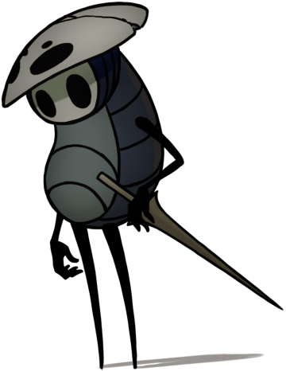
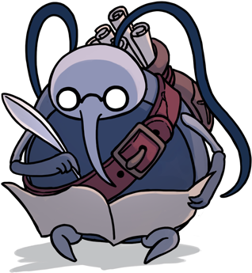
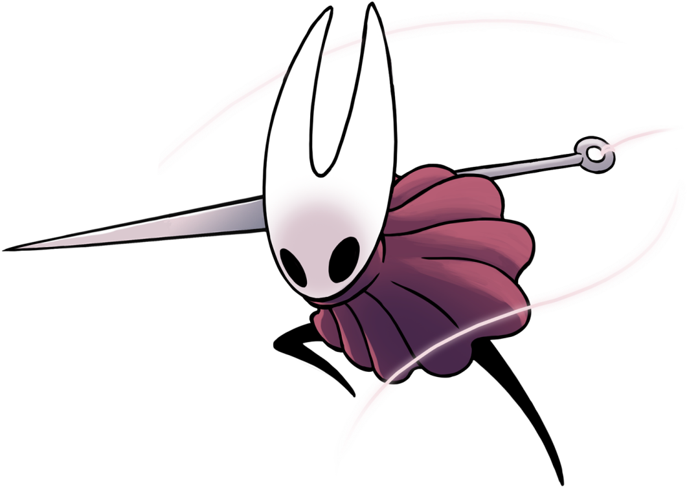
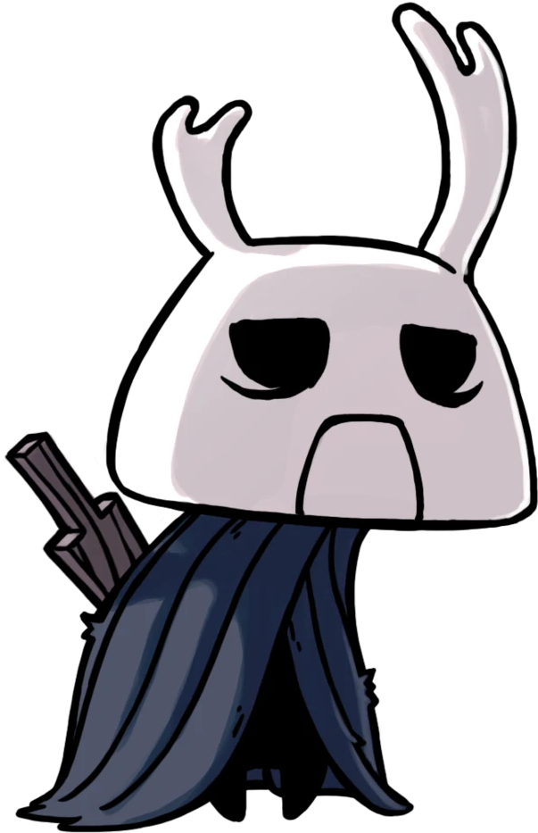
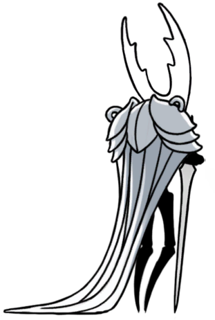

Personnages

Le monde de Hallownest est peuplé d'habitants tout aussi unique qu'excentriques.
Certains vous rendront différents services, d'autres deviendront votre rival ou peut-être même votre âme-soeur...

Le Knight
C'est le personnage que vous incarnerez durant votre périple à travers Hallownest.
Il ne parle pas beaucoup et ses motifs restent très abstraits quand à la raison de son périple.
Il se bat à l'aide d'un aiguillon qui aurait bien besoin d'un petit affutage.

Quirrel
Un explorateur curieux et distingué qui explore lui aussi le royaume de Hallownest.
Lui aussi se balade avec un aiguillon pour se défendre en cas de pépins.
Il est toujours prêt à aider les autres quand il en a la possibilité et porte un étrange masque sur le haut de sa tête.

Cornifer
Un cartographe itinérant proche de la retraite qui a vu et noté une quantité astronomique de paysages.
Il est pret à vous partager le fruit de son labeur contre une modique somme de géodes.
On l'entend souvent chantoner un air bien à lui qui résonne dans les cavernes.

Hornet
Un combatante mystérieuse qui se déplace à l'aide de son aiguille et de ses fils de soie.
Elle porte une cape/poncho rouge qui recouvre l'intégralité de son corps.
Elle a appris différentes techniques de chasse sournoises et s'arrange pour que le terrain soit à son avantage.
Peu de personnes dans Hallownest peuvent se vanter de lui avoir adressé la parole.

Zote
Un insecte un tempérament grincheux qui connait tout de la vie et s'est forgé des préceptes.
Il se bat avec un aiguillon en bois sur le point de se briser mais ne souhaite pas le remplacer.
N'hésitez pas à le saluer si vous croisez sa route au cours de votre voyage.
Et bien d'autres encore!
